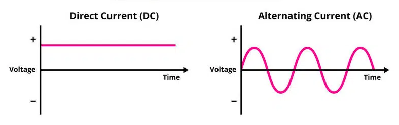
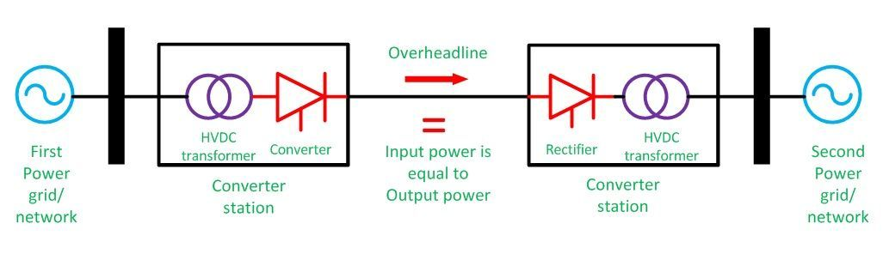
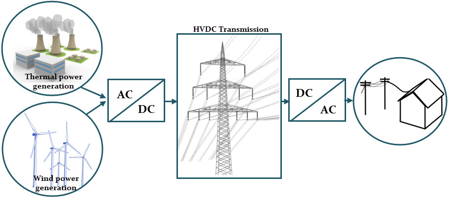
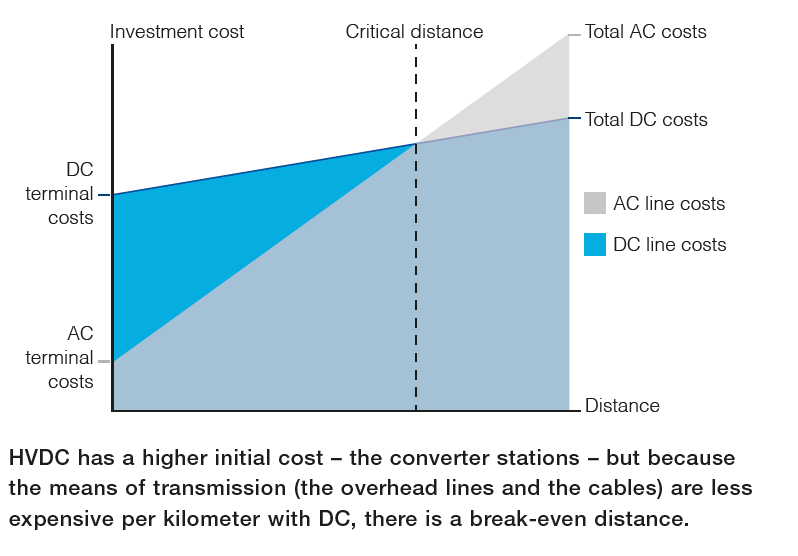

A COMPARATIVE ANALYSIS OF AC AND DC TRANSMISSION SYSTEMS
Power transmission is a complex web of technologies and infrastructure, with two prominent methods taking center stage: Alternating Current (AC) transmission and Direct Current (DC) transmission. This article aims to delve into the intricacies of both systems, exploring their advantages, disadvantages, and real-world applications [1].
Understanding AC Transmission
AC transmission involves the movement of electrical power through a network using alternating current. The system comprises key components such as generating stations, step-up transformers, transmission lines, substations, step-down transformers, and distribution networks [6].
Advantages of AC Transmission
1. Voltage Regulation: AC power can be easily adjusted using step-up and step-down transformers, optimizing voltage levels for efficient long-distance transmission [6].
2. Economical Equipment: Equipment in AC transmission systems is produced in large quantities, resulting in lower costs and making the system economically viable [16].
3. Safety: Arc quenching in AC switchgear is straightforward, as the circuit naturally interrupts at the zero-crossing of the waveform [9].
4. Interoperability: Most existing electrical transmission infrastructure worldwide is designed for AC, making it seamless to integrate new AC transmission systems [6].

Disadvantages of AC Transmission
1. Complex Construction: AC transmission lines require three conductors and an earth wire, making the construction more intricate and heavier compared to DC transmission lines [11].
2. Increased Conductor Material: AC transmission demands more conductor material due to the requirement for three overhead conductors, contributing to increased costs [11].
3. Skin Effect: AC transmission suffers from the skin effect, leading to increased conductor resistance and subsequent power loss (skin depth δ ≈ √(2/ωμσ)) [1][11].
4. Capacitance Issues: Capacitance forms between line conductors in AC transmission, causing continuous charging current and additional power loss [15].
Understanding DC Transmission Line
DC transmission involves the transfer of power over very long distances (500 km onwards) using direct current. The process entails converting AC power into DC, transmitting it through a DC line, and converting it back into AC at the receiving end using inverters [7].

Advantages of DC Transmission
1. Reduced Conductor Material: DC transmission requires two conductors compared to AC transmission’s three conductors, resulting in cost savings and less material usage [1].
2. Low Resistance Losses: DC transmission lines exhibit lower resistive losses, making them more efficient for transmitting the same amount of power over a given distance (no skin effect) [1][11].
3. Negligible Capacitive Effect: The capacitive effect in DC transmission is minimal, eliminating power loss due to line charging current [7].
4. Improved Voltage Regulation: DC transmission boasts better voltage regulation, thanks to lower voltage drop compared to AC transmission lines [2].

Disadvantages of DC Transmission
1. Costly Converters: Generating high DC voltage requires expensive converters at each end, adding complexity and cost to the transmission system [3][13].
2. Limited Equipment Options: Equipment for DC transmission, such as circuit breakers and switches, is limited and more expensive than their AC counterparts [13].
3. Complex Interconnection: Interconnecting DC systems with existing AC grids demands additional equipment (harmonic filters, reactive compensation), increasing complexity and cost [4][13].
4. Converter Limitations: DC transmission requires converters at both ends, and their capacities are finite, necessitating series and parallel combinations for higher power levels [12].
The Economic Dynamics of DC Transmission
1. Distance Matters: The primary advantage of DC transmission lines lies in their efficiency over long distances. As the length of a transmission line increases, resistive losses in AC transmission lines become more pronounced, making DC transmission more economically viable [2].
2. Voltage Drop and Resistance Losses: For shorter distances, AC transmission lines may exhibit comparable or even lower resistive losses. However, as the transmission distance extends, the lower resistance losses of DC transmission lines become increasingly significant, tipping the economic scales in favor of DC [2].
3. Converter Costs: One critical factor affecting the economic viability of DC transmission is the cost of converters. As technology advances and converter costs decrease, the economic appeal of DC transmission expands [3].
Finding the Sweet Spot: When DC Transmission Triumphs
1. Beyond 500 Kilometers: As a rule of thumb, DC transmission lines often become more economical when the transmission distance exceeds 500 km. Beyond this threshold, the reduced resistive losses of DC lines outweigh the initial investment in converters [2].
2. Underwater and Underground Applications: DC transmission lines prove their economic prowess in scenarios involving underwater or underground transmission. The reduced losses and better control of power flow make them the preferred choice for subsea cables and long-distance underground applications [2][17].
3. Interconnecting Asynchronous Grids: DC transmission lines shine when interconnecting asynchronous power grids, where their ability to efficiently transfer power between regions with different frequencies becomes economically advantageous [4][14].

Conclusions
In conclusion, the choice between AC and DC transmission systems depends on the specific requirements of a power transmission project. AC systems currently dominate the global landscape due to their ease of voltage transformation, efficiency, and compatibility with existing infrastructure [6][16]. However, DC systems carve a niche for themselves, offering unique advantages, especially in scenarios involving extensive long-distance transmission and specialized applications [2][17].
The economic sweet spot for DC transmission lines becomes apparent when distances extend beyond 500 km, particularly in challenging terrains, interconnecting asynchronous grids, and transcontinental power transmission. As technology continues to evolve and global energy demands undergo shifts, the role of DC transmission in the economic landscape of power distribution is poised to grow, promising a new era of efficient and cost-effective long-distance energy transmission.
References
- “Skin effect,” Wikipedia, 2025. [Online]. Available: https://en.wikipedia.org/wiki/Skin_effect. [Accessed: Apr. 20, 2025].
- R. D. Middleton and N. M. Thompson, “This is why HVDC transmission system beats HVAC in these ...,” Electrical Engineering Portal, 2017. [Online]. Available: https://electrical-engineering-portal.com/why-hvdc-transmission-system-beats-hvac. [Accessed: Apr. 20, 2025].
- “HVDC Converter Market Analysis, Market Statistics, Trends, Forecast 2023–2030,” GlobeNewswire, Oct. 10, 2023. [Online]. Available: https://www.globenewswire.com/news-release/2023/10/10/2757144. [Accessed: Apr. 20, 2025].
- “Interconnecting grids,” Hitachi Energy. [Online]. Available: https://www.hitachienergy.com/us/en/products-and-solutions/hvdc/interconnecting-grids. [Accessed: Apr. 20, 2025].
- J. Bell et al., “Charging Current Compensation in Line Current Differential Applications,” Schweitzer Engineering Labs, 2019. [Online]. Available: https://selinc.com/api/download/125783/. [Accessed: Apr. 20, 2025].
- MISO, “Transmission Cost Estimation Guide for MTEP24,” MISO Energy, Jan. 2024. [Online]. Available: https://cdn.misoenergy.org/20240131%20PSC%20Item%2005%20Transmission%20Cost%20Estimation%20Guide%20for%20MTEP24.pdf. [Accessed: Apr. 20, 2025].
- National Grid, “High Voltage Direct Current Electricity – technical information,” National Grid, 2012. [Online]. Available: https://www.nationalgrid.com/sites/default/files/documents/13784-High%20Voltage%20Direct%20Current%20Electricity%20%E2%80%93%20technical%20information.pdf. [Accessed: Apr. 20, 2025].
- “Connecting the country with HVDC,” U.S. Department of Energy, 2023. [Online]. Available: https://www.energy.gov/oe/articles/connecting-country-hvdc. [Accessed: Apr. 20, 2025].
- “Lossy Transmission Lines: Introduction to the Skin Effect,” All About Circuits, 2023. [Online]. Available: https://www.allaboutcircuits.com/technical-articles/lossy-transmission-lines-introduction-to-the-skin-effect/. [Accessed: Apr. 20, 2025].
- A. M. Ehsan, “Comparative study of HVAC and HVDC transmission systems,” Renewable and Sustainable Energy Reviews, vol. 43, pp. 381–391, 2015.
- P. Manabhan, “What factors influence HVDC project costs?,” LinkedIn, Jan. 2025. [Online]. Available: https://www.linkedin.com/pulse/what-factors-influence-hvdc-project-costs-pradeep-plmanabhan-g1wye. [Accessed: Apr. 20, 2025].
- “Scotland bets on supply chain growth with subsea cable investment,” Financial Times, Feb. 2025. [Online]. Available: https://www.ft.com/content/8ce06f13-c09c-42b4-ba65-d29d4983d60d. [Accessed: Apr. 20, 2025].
- T. Bains et al., “Charging current: basics, compensation approximations, errors, and remediation,” WPRC Archives, 2023. [Online]. Available: https://wprcarchives.org/wp-content/uploads/2024/03/Theron_JC_Charging-current-basics-compensation-approximations-errors-and-remediation_20231011.pdf. [Accessed: Apr. 20, 2025].
- MISO, “MISO Transmission Cost Estimation Guide,” MISO Energy, Jan. 2024. [Online]. Available: https://cdn.misoenergy.org/MISO%20Transmission%20Cost%20Estimation%20Guide%20for%20MTEP24337433.pdf. [Accessed: Apr. 20, 2025].
- “Why HVDC cables are poised to provide valuable alternatives,” Utility Dive, 2023. [Online]. Available: https://www.utilitydive.com/spons/why-hvdc-cables-are-poised-to-provide-valuable-alternatives/651800/. [Accessed: Apr. 20, 2025].